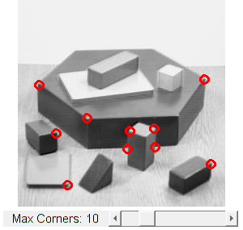

Detecting corners location in subpixeles
Demo code for detecting corners using Shi-Tomasi method and refining corner locations.
In this sample you will learn how to use the OpenCV functions:
- cv.goodFeaturesToTrack to detect corners using the Shi-Tomasi method.
- cv.cornerSubPix to find more exact corner positions (more exact than integer pixels).
Sources:
- https://docs.opencv.org/3.2.0/d8/dd8/tutorial_good_features_to_track.html
- https://docs.opencv.org/3.2.0/d8/d5e/tutorial_corner_subpixeles.html
- https://github.com/opencv/opencv/blob/3.2.0/samples/cpp/tutorial_code/TrackingMotion/goodFeaturesToTrack_Demo.cpp
- https://github.com/opencv/opencv/blob/3.2.0/samples/cpp/tutorial_code/TrackingMotion/cornerSubPix_Demo.cpp
function varargout = corner_subpixels_demo_gui(im) % load source image if nargin < 1 src = imread(fullfile(mexopencv.root(),'test','blox.jpg')); elseif ischar(im) src = imread(im); else src = im; end % create the UI h = buildGUI(src); if nargout > 0, varargout{1} = h; end end function onChange(~,~,h) %ONCHANGE Event handler for UI controls % retrieve current values from UI controls maxCorners = round(get(h.slid, 'Value')); % maxCorners=0 means all corners found are kept %if maxCorners == 0, maxCorners = 500; end set(h.txt, 'String',sprintf('Max Corners: %2d',maxCorners)); % apply Shi-Tomasi corner detector corners = cv.goodFeaturesToTrack(h.srcgray, 'MaxCorners',maxCorners, ... 'QualityLevel',0.01, 'MinDistance',10, ... 'BlockSize',3, 'UseHarrisDetector',false, 'K',0.04); fprintf('Number of corners detected: %d\n', numel(corners)); % draw corners detected out = h.src; for i=1:numel(corners) out = cv.circle(out, corners{i}, 5, 'Color',[255 0 0], 'Thickness',2); end % show result set(h.img, 'CData',out); drawnow; % calculate the refined corner locations corners2 = cv.cornerSubPix(h.srcgray, corners, 'WinSize',[5 5], ... 'Criteria',struct('type','Count+EPS', 'maxCount',40, 'epsilon',0.001)); for i=1:numel(corners) fprintf(' -- Refined Corner [%2d] (%3d,%3d) -> (%6.2f,%6.2f)\n', ... i, corners{i}, corners2{i}); end end function h = buildGUI(img) %BUILDGUI Creates the UI % parameters maxCorners = 10; max_maxCorners = 50; sz = size(img); sz(2) = max(sz(2), 300); % minimum figure width % build the user interface (no resizing to keep it simple) h = struct(); h.src = img; if size(img,3) > 1 h.srcgray = cv.cvtColor(img, 'RGB2GRAY'); else h.srcgray = img; end h.fig = figure('Name','Image Corners Demo', ... 'NumberTitle','off', 'Menubar','none', 'Resize','off', ... 'Position',[200 200 sz(2) sz(1)+29]); if ~mexopencv.isOctave() %HACK: not implemented in Octave movegui(h.fig, 'center'); end h.ax = axes('Parent',h.fig, 'Units','pixels', 'Position',[1 30 sz(2) sz(1)]); if ~mexopencv.isOctave() h.img = imshow(img, 'Parent',h.ax); else %HACK: https://savannah.gnu.org/bugs/index.php?45473 axes(h.ax); h.img = imshow(img); end h.txt = uicontrol('Parent',h.fig, 'Style','text', 'FontSize',11, ... 'Position',[5 5 130 20], 'String',sprintf('Max Corners: %2d',maxCorners)); h.slid = uicontrol('Parent',h.fig, 'Style','slider', 'Value',maxCorners, ... 'Min',0, 'Max',max_maxCorners, 'SliderStep',[1 10]./(max_maxCorners-0), ... 'Position',[135 5 sz(2)-135-5 20]); % hook event handlers, and trigger default start set(h.slid, 'Callback',{@onChange,h}, ... 'Interruptible','off', 'BusyAction','cancel'); onChange([],[],h); end
Number of corners detected: 10 -- Refined Corner [ 1] (138,162) -> (136.15,161.56) -- Refined Corner [ 2] (230, 98) -> (230.77, 96.75) -- Refined Corner [ 3] (135,184) -> (135.42,182.43) -- Refined Corner [ 4] ( 47,165) -> ( 48.30,163.26) -- Refined Corner [ 5] (168,159) -> (169.76,158.30) -- Refined Corner [ 6] ( 26,105) -> ( 24.52,103.50) -- Refined Corner [ 7] (238,203) -> (239.23,201.65) -- Refined Corner [ 8] ( 85,146) -> ( 85.07,147.57) -- Refined Corner [ 9] ( 61,229) -> ( 63.54,228.51) -- Refined Corner [10] (169,182) -> (169.13,181.32)